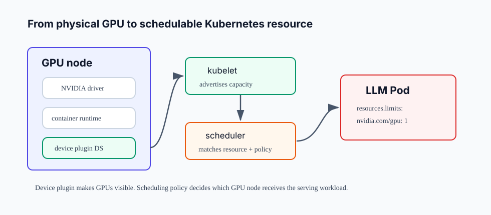
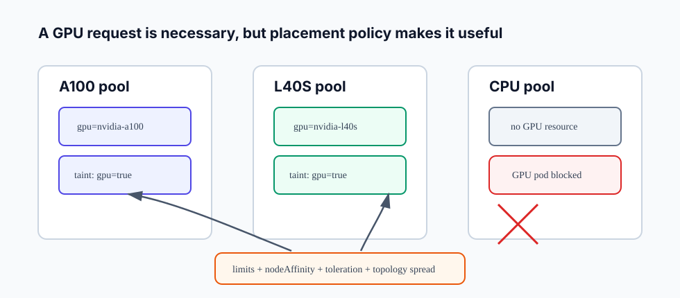

13장. Kubernetes GPU 운영: device plugin, node pool, scheduling¶
12장에서 우리는 한 GPU를 넘을 때 parallelism과 NCCL 통신이 latency 안으로 들어온다는 점을 봤다. 이제 질문이 cluster 운영으로 바뀐다.
Kubernetes에 GPU node를 붙이면 LLM serving pod는 자동으로 올바른 GPU에 배치되는가?
답은 아니다. Kubernetes가 GPU를 인식하게 만드는 것과, inference workload를 올바른 GPU node에 배치하고, 다른 workload와 격리하고, 장애와 capacity를 운영하는 것은 다른 문제다.
이 장의 독자 질문은 다음과 같다.
Kubernetes에서 GPU는 어떻게 resource로 노출되고, AI 인프라 엔지니어는 node pool, label, taint, toleration, affinity를 어떻게 설계해야 하는가?
핵심은 하나다. GPU scheduling은 nvidia.com/gpu: 1 한 줄이 아니라, hardware inventory와 placement policy를 함께 설계하는 일이다.
Kubernetes는 GPU를 기본 CPU처럼 알지 못한다¶
Kubernetes는 CPU와 memory를 기본 resource로 다룬다. GPU 같은 specialized hardware는 device plugin을 통해 node의 allocatable resource로 노출된다. Kubernetes 공식 문서는 GPU 관리를 stable 기능으로 설명하면서, AMD/NVIDIA GPU를 device plugin을 통해 cluster node에서 사용할 수 있다고 설명한다.
NVIDIA 환경에서 일반적인 흐름은 다음과 같다.

| 계층 | 역할 | 확인할 것 |
|---|---|---|
| GPU driver | host가 GPU를 사용할 수 있게 한다 | nvidia-smi가 node에서 동작하는가 |
| container runtime | container 안에서 GPU device와 library를 사용할 수 있게 한다 | NVIDIA Container Toolkit, runtime config |
| device plugin | GPU를 Kubernetes extended resource로 노출한다 | DaemonSet health, node allocatable |
| kubelet | node capacity와 allocatable resource를 API server에 보고한다 | kubectl describe node |
| scheduler | Pod의 GPU limit과 scheduling policy를 보고 node를 선택한다 | pending reason, events |
| workload Pod | resources.limits.nvidia.com/gpu를 요청한다 |
limits, tolerations, affinity |
이 흐름 중 하나라도 빠지면 문제는 다르게 보인다. Driver가 없으면 node 자체가 GPU를 못 쓴다. Runtime 설정이 잘못되면 Pod는 뜨지만 container 안에서 GPU를 못 본다. Device plugin이 없으면 Kubernetes scheduler가 GPU capacity를 모른다. Scheduling policy가 없으면 GPU는 보이지만 원하지 않는 node에 배치될 수 있다.
Device plugin은 GPU를 보이게 할 뿐이다¶
NVIDIA k8s-device-plugin은 DaemonSet으로 배포되어 각 GPU node에서 GPU 개수와 health를 Kubernetes에 노출한다. 공식 README는 이 plugin이 cluster node의 GPU 수를 노출하고, GPU health를 추적하며, GPU enabled container를 실행할 수 있게 한다고 설명한다.
기본 Pod spec은 다음 형태다.
apiVersion: v1
kind: Pod
metadata:
name: llm-serving
spec:
containers:
- name: server
image: registry.example.com/llm-server:v1
resources:
limits:
nvidia.com/gpu: 1
Kubernetes GPU resource에는 중요한 제약이 있다. 공식 문서 기준으로 GPU는 limits에 지정해야 하며, requests와 limits를 둘 다 지정한다면 값이 같아야 한다. requests만 지정하는 방식은 사용할 수 없다.
이 제약은 운영적으로 중요하다. CPU처럼 "request는 낮게, limit은 높게" 잡는 사고방식을 GPU에 그대로 적용할 수 없다. GPU 1개를 요청하면 scheduler는 그 Pod가 GPU 1개를 점유한다고 본다.
Node pool을 먼저 나눈다¶
GPU cluster 운영에서 첫 번째 설계 단위는 node pool이다. 모든 GPU node를 하나의 pool처럼 보면 placement가 불명확해진다. LLM serving은 GPU model, VRAM, NVLink topology, local SSD, network fabric, node image, driver version에 민감하다.
예를 들어 다음 node pool은 서로 다른 운영 단위다.
| Node pool | 예 | 주된 용도 |
|---|---|---|
gpu-a100-80g |
A100 80GB, NVLink | large model serving, tensor parallel |
gpu-h100 |
H100, high bandwidth fabric | latency-sensitive production serving |
gpu-l40s |
L40S, PCIe | cost-sensitive serving, embedding, batch |
gpu-mig |
MIG partitioned GPU | small model, notebook, isolated low-SLO workloads |
cpu-system |
CPU-only | gateway, controller, observability |
Node pool을 나누는 이유는 scheduler가 "GPU 1개"만 보고는 GPU의 품질과 topology를 이해하지 못하기 때문이다. nvidia.com/gpu: 1은 A100 80GB 1개와 L40S 1개를 구분하지 않는다. 구분은 labels, node affinity, taints/tolerations, admission policy, platform convention으로 해야 한다.

Label은 선택 기준이고 taint는 보호 장치다¶
GPU node에는 workload가 선택할 수 있는 label이 필요하다.
kubectl label node gpu-node-1 accelerator=nvidia-a100-80g
kubectl label node gpu-node-1 serving.ai/node-pool=gpu-a100-80g
kubectl label node gpu-node-1 topology.ai/nvlink=true
가장 단순한 Pod 배치는 nodeSelector로 시작할 수 있다.
spec:
nodeSelector:
serving.ai/node-pool: gpu-a100-80g
더 복잡한 조건은 node affinity로 표현한다. Kubernetes 문서는 nodeSelector를 가장 단순한 node selection 방식으로 설명하고, node affinity는 더 표현력이 높고 hard rule과 soft preference를 구분할 수 있다고 설명한다.
spec:
affinity:
nodeAffinity:
requiredDuringSchedulingIgnoredDuringExecution:
nodeSelectorTerms:
- matchExpressions:
- key: serving.ai/node-pool
operator: In
values:
- gpu-a100-80g
- key: topology.ai/nvlink
operator: In
values:
- "true"
Label이 "이 node를 선택하라"는 신호라면, taint는 "아무 Pod나 들어오지 못하게 하라"는 보호 장치다.
kubectl taint nodes gpu-node-1 nvidia.com/gpu=true:NoSchedule
GPU workload Pod에는 matching toleration을 넣는다.
spec:
tolerations:
- key: nvidia.com/gpu
operator: Exists
effect: NoSchedule
Kubernetes 문서는 taint가 node가 Pod를 밀어내는 방식이고, toleration은 Pod가 해당 taint를 견딜 수 있게 한다고 설명한다. 단, toleration은 scheduling을 허용할 뿐 보장하지 않는다. Scheduler는 여전히 resource, affinity, spread, priority 같은 다른 조건을 함께 평가한다.
GPU Pod spec은 resource와 placement를 함께 읽어야 한다¶
LLM serving Pod에서 다음 네 가지는 같이 봐야 한다.
apiVersion: apps/v1
kind: Deployment
metadata:
name: llm-server
spec:
replicas: 2
selector:
matchLabels:
app: llm-server
template:
metadata:
labels:
app: llm-server
spec:
tolerations:
- key: nvidia.com/gpu
operator: Exists
effect: NoSchedule
affinity:
nodeAffinity:
requiredDuringSchedulingIgnoredDuringExecution:
nodeSelectorTerms:
- matchExpressions:
- key: serving.ai/node-pool
operator: In
values:
- gpu-a100-80g
containers:
- name: server
image: registry.example.com/llm-server:v1
resources:
limits:
nvidia.com/gpu: 1
| 항목 | 의미 |
|---|---|
resources.limits.nvidia.com/gpu |
GPU 몇 개를 점유할지 |
nodeAffinity 또는 nodeSelector |
어떤 GPU node pool에 갈지 |
tolerations |
GPU 전용 node taint를 통과할 수 있는지 |
replicas |
data parallel serving replica 수 |
이 네 가지 중 하나라도 빠지면 운영 의도가 흐려진다. GPU limit만 있으면 아무 GPU node나 갈 수 있다. Affinity만 있고 GPU limit이 없으면 GPU node에 올라가도 GPU를 점유하지 않을 수 있다. Toleration이 없으면 GPU node가 taint되어 있을 때 Pending 상태가 된다.
Pending Pod는 scheduler의 설명을 읽는다¶
GPU workload가 Pending이면 먼저 event를 본다.
kubectl describe pod llm-server-xxxxx
자주 보는 원인은 다음과 같다.
| Event / 증상 | 의미 | 확인 |
|---|---|---|
Insufficient nvidia.com/gpu |
allocatable GPU가 부족하다 | kubectl describe node |
| node affinity mismatch | label 조건을 만족하는 node가 없다 | node labels |
| untolerated taint | Pod가 GPU node taint를 tolerate하지 못한다 | taints/tolerations |
| image pull delay | GPU scheduling은 됐지만 image를 못 받는다 | registry, image size |
| runtime error after scheduled | Pod는 떴지만 container가 GPU를 못 본다 | container runtime, driver mount |
AI 인프라 엔지니어는 Pending을 "Kubernetes 문제"라고 뭉뚱그리면 안 된다. Scheduler가 못 올린 것인지, kubelet이 container를 못 실행한 것인지, runtime 안에서 CUDA가 실패한 것인지 분리해야 한다.
Topology-aware placement가 필요해지는 순간¶
12장에서 본 tensor parallelism은 GPU 사이 topology에 민감하다. Kubernetes scheduler의 기본 resource model은 nvidia.com/gpu: 4가 같은 node의 어떤 네 GPU인지, 그 GPU들이 NVLink로 묶였는지까지 세밀하게 알지 못한다.
따라서 production LLM serving에서는 다음 중 하나가 필요해질 수 있다.
- 한 Pod가 한 node의 모든 GPU를 점유하도록 설계한다.
- Node pool 자체를 동일 topology 장비로만 구성한다.
- GPU feature labels로 NVLink, memory, MIG profile, GPU product를 노출한다.
- Runtime이 visible device ordering을 어떻게 받는지 검증한다.
- Multi-node TP/PP는 Kubernetes 기본 scheduler만 믿지 말고 Ray, MPI operator, custom scheduler, gang scheduling, placement group 같은 계층을 검토한다.
이 장에서는 custom scheduler까지 깊게 들어가지 않는다. 그러나 기억해야 할 원칙은 분명하다. Kubernetes의 기본 GPU resource는 "개수"를 잘 다루지만, LLM serving에서 중요한 "GPU 사이 관계"는 별도 정책으로 보강해야 한다.
MIG와 time-slicing은 capacity가 아니라 isolation 정책이다¶
NVIDIA GPU 운영에서는 MIG나 time-slicing을 만나게 된다. 둘 다 GPU 공유와 관련 있지만 의미가 다르다.
MIG는 지원 GPU를 하드웨어 partition으로 나누어 더 작은 GPU instance처럼 사용하는 방식이다. 작은 model serving, notebook, batch inference처럼 isolation이 중요한 workload에 유용할 수 있다. 하지만 한 large model replica가 GPU 전체 VRAM과 bandwidth를 필요로 한다면 MIG는 오히려 제약이 된다.
Time-slicing은 여러 workload가 GPU를 시간적으로 나눠 쓰게 하는 방식이다. GPU utilization이 낮은 작은 workload에는 유용할 수 있지만, latency-sensitive LLM serving에서는 tail latency가 흔들릴 수 있다.
따라서 질문은 "GPU를 더 잘게 나눌 수 있나"가 아니다.
| 방식 | 먼저 물어볼 질문 |
|---|---|
| full GPU | 이 workload가 latency SLO와 KV cache를 위해 GPU 전체가 필요한가? |
| MIG | 작은 workload를 강하게 격리하는 것이 목표인가? |
| time-slicing | latency보다 평균 utilization이 더 중요한가? |
Production serving node pool과 notebook/shared experimentation node pool을 섞지 않는 이유도 여기에 있다.
Autoscaling은 GPU 개수보다 warm capacity가 어렵다¶
CPU service는 replica를 늘리면 비교적 빠르게 capacity가 늘 수 있다. LLM serving은 다르다. 새 Pod가 GPU node에 배치되어도 model download, weight load, engine build, CUDA graph capture, tokenizer 준비, health check까지 시간이 걸린다.
따라서 GPU autoscaling은 다음 질문을 포함해야 한다.
- 새 GPU node가 준비되는 데 몇 분 걸리는가?
- Model artifact는 local cache나 shared cache에 있는가?
- Pod가 Ready가 되기 전에 traffic이 들어가지 않도록 readiness가 정확한가?
- Scale down 때 active request와 KV cache를 어떻게 drain하는가?
- HPA 기준이 QPS인가, queue time인가, active sequence인가, GPU KV cache usage인가?
GPU node autoscaling은 비용을 줄일 수 있지만, cold start가 길면 incident 중에는 도움이 늦게 온다. Production serving에는 최소 warm replica와 warm node capacity가 필요할 수 있다.
실습: GPU scheduling checklist 만들기¶
실제 cluster에서 다음 명령으로 시작한다.
kubectl get nodes
kubectl describe node <gpu-node-name>
kubectl get pods -n kube-system | grep -i nvidia
kubectl get pods -A -o wide | grep <gpu-node-name>
그 다음 표를 채운다.
| 항목 | 확인 명령 | 기대 상태 |
|---|---|---|
| driver | node에서 nvidia-smi |
GPU와 driver version 표시 |
| container runtime | GPU test pod | container 안에서 CUDA 사용 가능 |
| device plugin | kubectl get ds -A |
NVIDIA device plugin Ready |
| allocatable GPU | kubectl describe node |
nvidia.com/gpu capacity 표시 |
| node label | kubectl get node --show-labels |
GPU type/node pool label 존재 |
| taint | kubectl describe node |
GPU node에 NoSchedule taint |
| toleration | Pod spec | GPU workload만 taint 통과 |
| affinity | Pod spec | 올바른 GPU node pool 선택 |
| readiness | service endpoint | model load 후에만 traffic 수신 |
| drain | rollout/scale down test | active request 중단 최소화 |
마지막으로 다음 한 문장을 쓴다.
이 workload는
gpu-a100-80gnode pool에만 배치되며,nvidia.com/gpu: 1을 요청하고, GPU node taint를 tolerate하며, model readiness가 성공하기 전에는 traffic을 받지 않는다.
이 문장이 없다면 Kubernetes YAML은 있어도 운영 계약은 없는 상태다.
실패 패턴¶
GPU limit만 넣고 node pool을 지정하지 않는다¶
GPU 종류가 하나뿐인 작은 cluster에서는 우연히 동작할 수 있다. 하지만 A100, L40S, MIG, spot GPU가 섞이면 workload가 엉뚱한 node에 갈 수 있다.
GPU node에 taint를 걸지 않는다¶
CPU-only Pod나 system workload가 GPU node에 올라와 CPU, memory, disk, network를 갉아먹을 수 있다. GPU node는 비싼 node이므로 workload admission을 명확히 해야 한다.
Toleration을 만능 scheduling rule로 착각한다¶
Toleration은 taint를 통과하게 할 뿐이다. 원하는 GPU type을 선택하려면 node selector나 node affinity가 필요하다.
Pod가 Running이면 GPU 사용 가능하다고 본다¶
Pod phase가 Running이어도 container 안에서 CUDA library, device mount, driver compatibility 문제가 날 수 있다. GPU test command와 runtime metric을 확인해야 한다.
Autoscaling만 믿고 warm capacity를 두지 않는다¶
LLM server cold start는 길다. Model artifact download와 weight load가 몇 분 걸리면 HPA가 반응해도 SLO는 이미 깨질 수 있다.
정리¶
- Kubernetes는 GPU를 device plugin 기반 extended resource로 노출한다.
- NVIDIA device plugin은 DaemonSet으로 GPU 수와 health를 Kubernetes에 알리고, Pod는
nvidia.com/gpulimit으로 GPU를 요청한다. - GPU resource는
limits에 지정해야 하며,requests와 함께 쓸 경우 두 값은 같아야 한다. - Node pool, labels, node affinity, taints/tolerations는 GPU workload placement의 핵심 운영 도구다.
- Toleration은 scheduling 허용 조건일 뿐 placement 보장은 아니다. GPU type 선택은 label과 affinity가 담당한다.
- LLM serving에서는 GPU 개수뿐 아니라 GPU type, VRAM, NVLink topology, local cache, network, warm capacity까지 node pool 설계에 포함해야 한다.
- Pending Pod는 scheduler event를 읽고 resource 부족, label mismatch, taint mismatch, runtime failure를 분리해 진단해야 한다.
Source anchors¶
- Kubernetes GPU scheduling: https://kubernetes.io/docs/tasks/manage-gpus/scheduling-gpus/
- NVIDIA k8s-device-plugin: https://github.com/NVIDIA/k8s-device-plugin
- Kubernetes assigning Pods to nodes: https://kubernetes.io/docs/concepts/scheduling-eviction/assign-pod-node/
- Kubernetes taints and tolerations: https://kubernetes.io/docs/concepts/scheduling-eviction/taint-and-toleration/